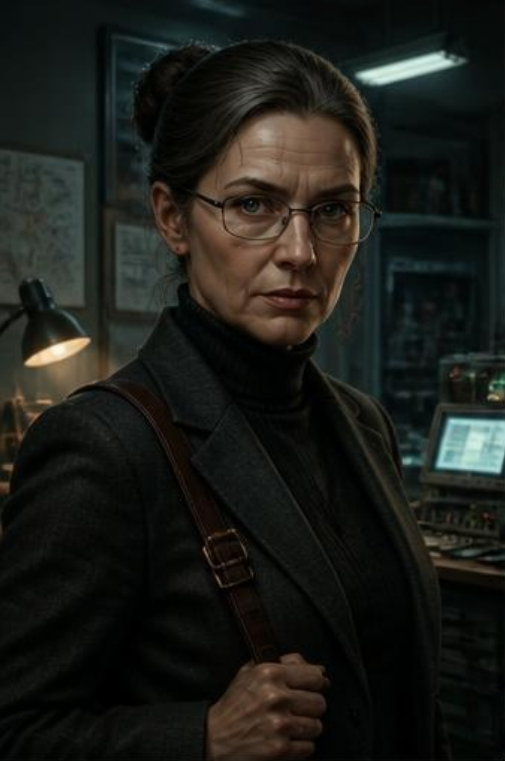
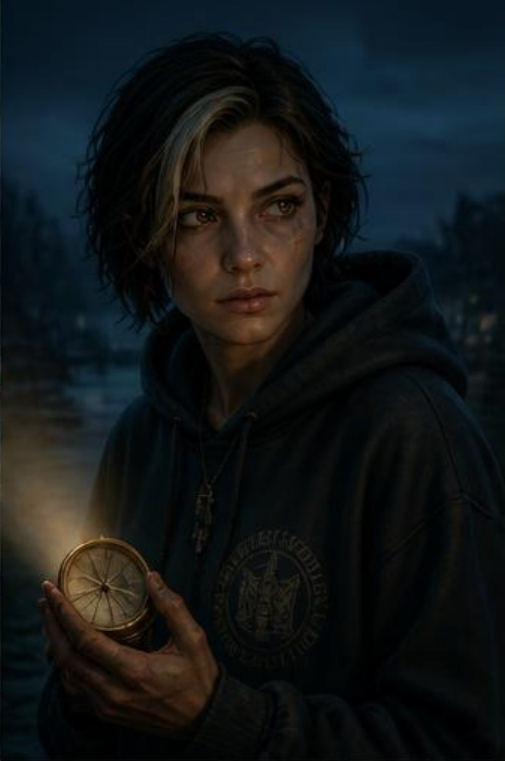
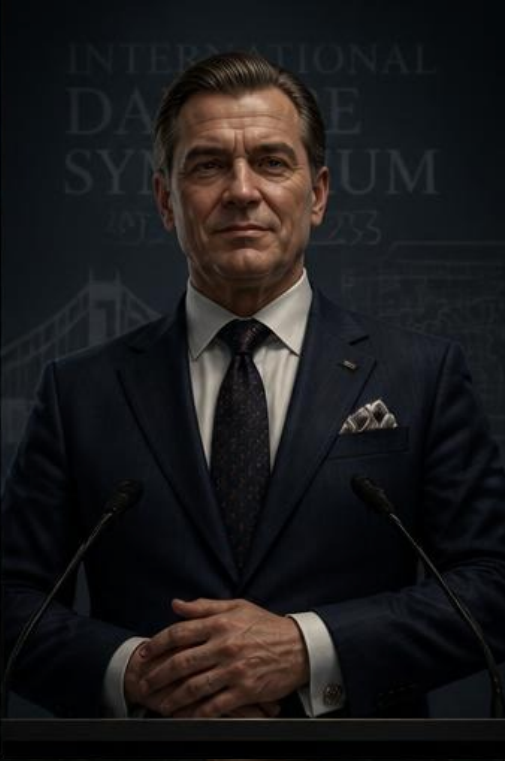
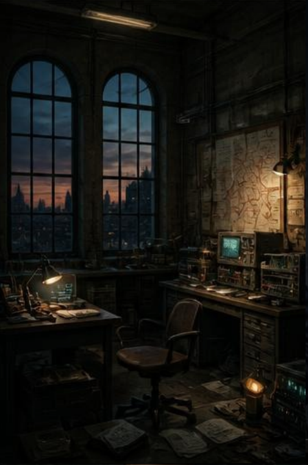
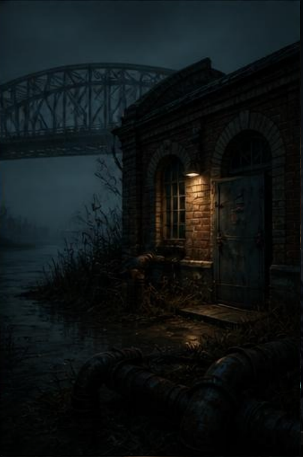
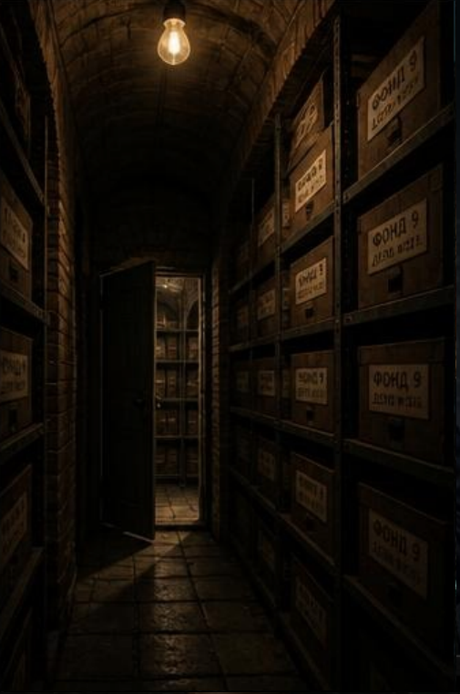

Cast & Locations
Every frame below is a placeholder. Generate an image from its prompt
and save it into /images/ using the filename shown — the
photo will replace the placeholder automatically.
Characters
Realistic portrait, mid-50s woman, silver-streaked bun, rectangular glasses, charcoal blazer, brass-buckle satchel, cool fluorescent + warm desk light, three-quarter angle, cinematic realism

Prof. Elena Vasileva
The Vanished Mentor. Head of the Cybernetics & Robotics Lab. Brilliant, guarded, dry-witted. Built Iskra to protect the Danube basin — and vanished the night the truth got too dangerous to say out loud.
Semi-realistic portrait, woman early 20s, cropped dark hair with bleached streak, oversized hoodie, holding a cracked brass compass, blue-hour light with a warm flashlight beam, low heroic angle

Yana Draganova
The Protagonist. Final-year Computer Engineering student and Vasileva's research assistant. Stubborn, resourceful, quietly grieving her father, lost to a Danube flood nine years earlier.
Realistic portrait, polished man in his 50s, navy suit, gear-shaped silver cufflinks, practiced smile, bright stage lighting from below, formal centered composition, high contrast

Dean Rumen Stoykov
The Antagonist. Dean of Engineering. Charming, calculating, risk-averse. Suppresses Iskra's findings to protect himself from a decade-old cover-up.
Locations
Wide establishing shot, university lab at dusk, arched windows, glowing oscilloscopes, corkboard of river maps with red string, empty chair pushed back, moody cinematic realism

The Cybernetics & Signals Lab
Room 214 — where the mystery begins. Charged, half-abandoned, dust disturbed by a hurried departure.
Wide shot, abandoned Soviet-era brick pumping station on a foggy Danube riverbank, rusted pipes and reeds, new padlock on old iron door, bridge silhouette in fog, blue twilight, low angle

The Old Pumping Station
Hides Iskra's physical prototype — and, later, Vasileva herself. Isolated, eerie, water lapping against rusted metal.
Low-angle one-point perspective, hidden underground university archive, brick arches, steel shelves of dusty Cyrillic-labeled boxes, single bulb on a pull-chain, secret door ajar, chiaroscuro lighting

The Sealed Archive ("Fund 9")
Where the university's covered-up history — and the proof of Stoykov's cover-up — finally comes to light.
Each character and location went through three alternative versions
before selection — see 01_characters.md and
02_locations.md in the project folder. All eight full
image prompts (style, lighting, composition, mood, camera angle, art
style) are in 05_image_prompts.md.